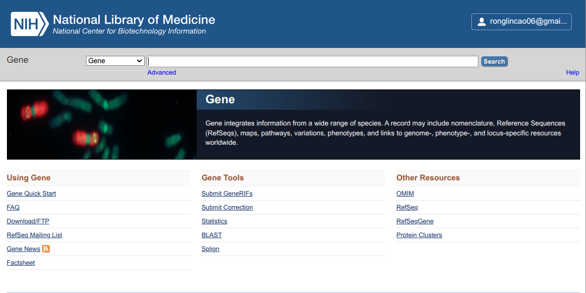
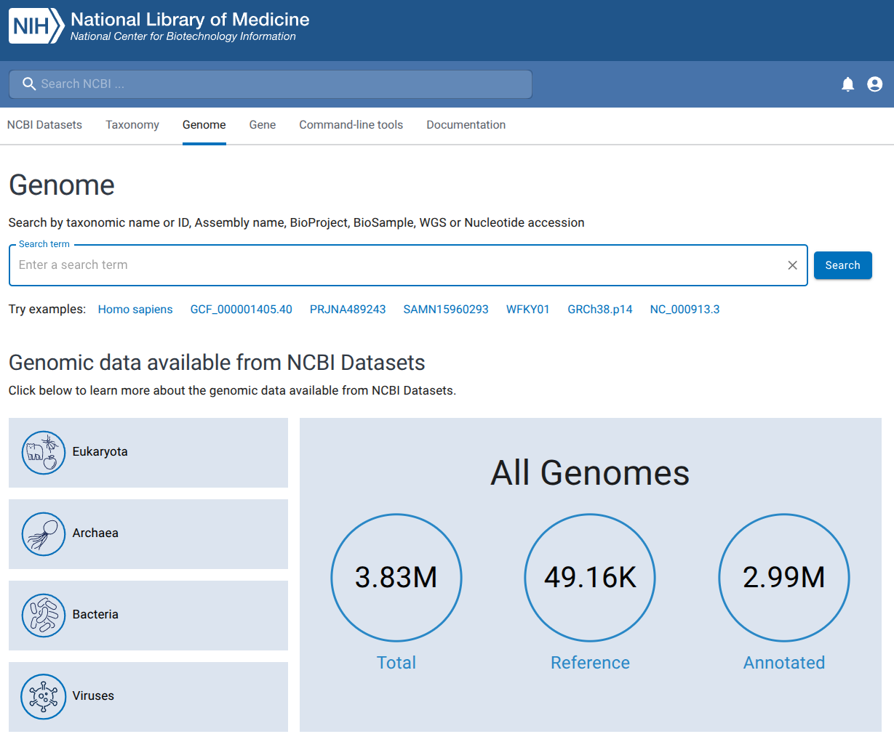
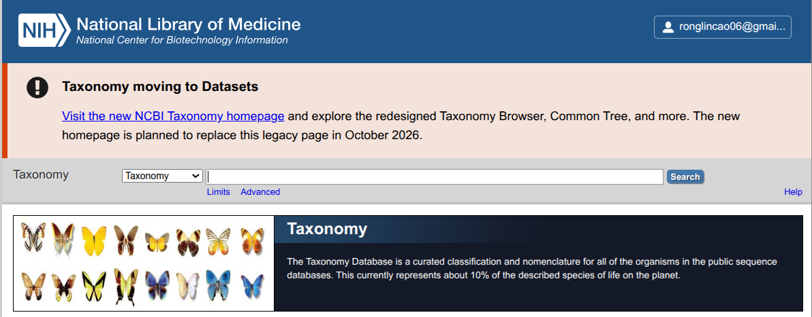
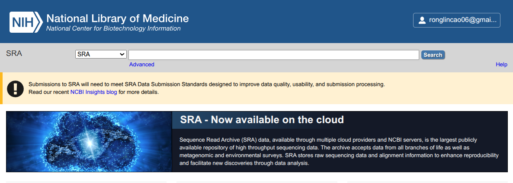
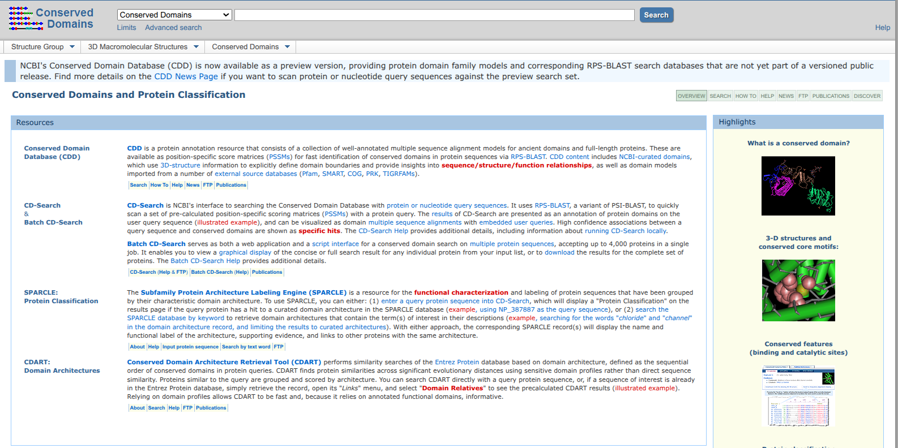
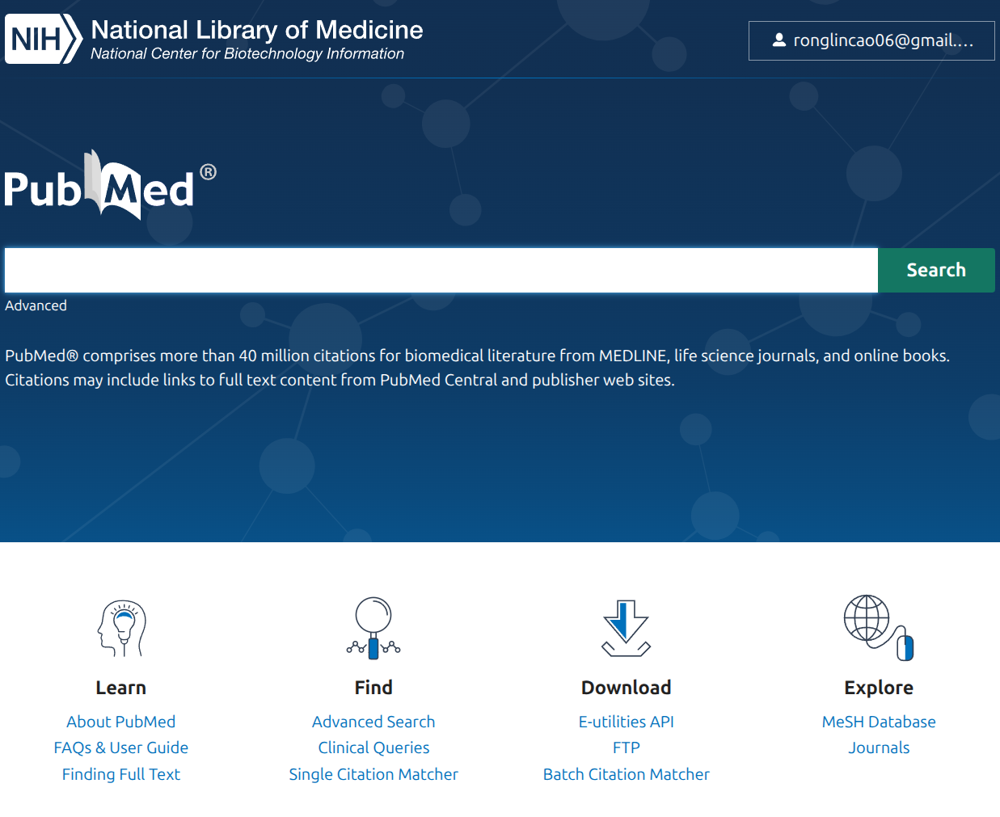
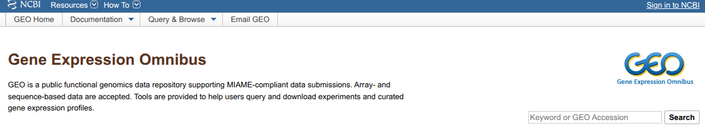
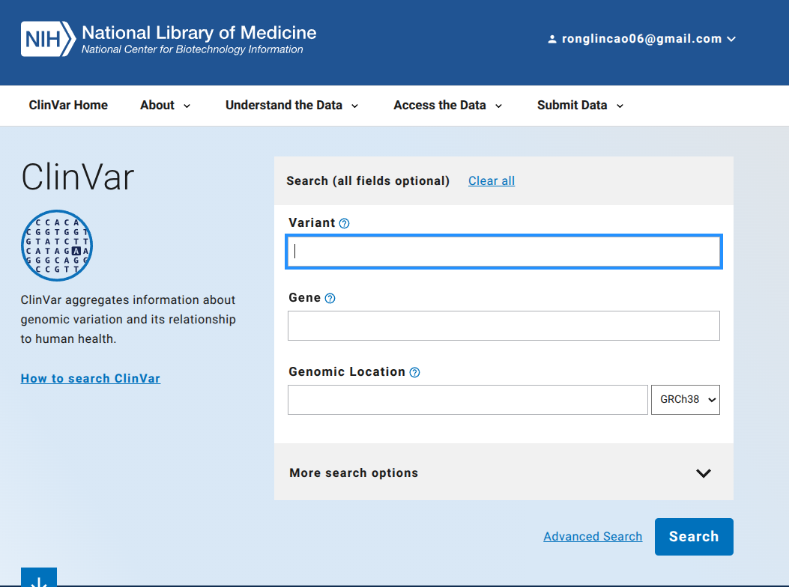
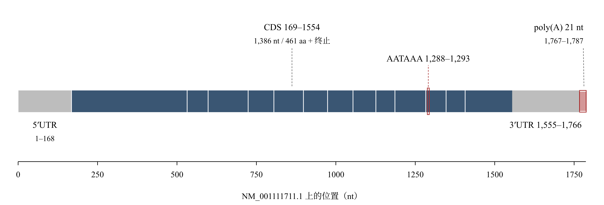
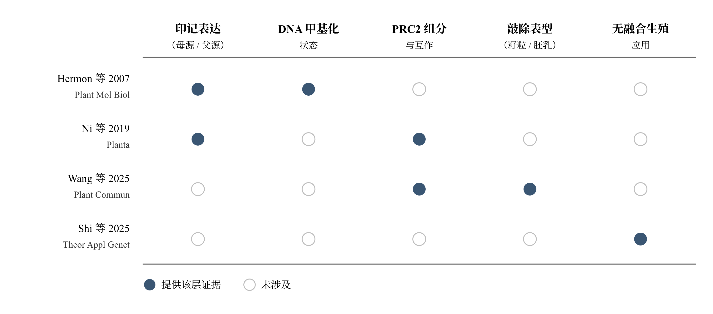

姓名：曹荣麟班级：生技 2402学号：2024014209
实验掌握情况：基本没有太大问题
你的疑问（最多 3 条）：见讨论区
本次实验的研究分子是玉米 ZmFIE1（fertilization independent endosperm 1，NCBI Gene ID 542075；基因符号 LOC542075），位于 4 号染色体负链，编码 461 aa 的 PRC2（Polycomb Repressive Complex 2）WD40 亚基。玉米基因组复制产生了 FIE1/FIE2 一对旁系同源基因，FIE1 又受基因组印记调控，正好用来练习跨库标识核对和序列文件解读。
目前已得到的结果是：母源等位基因在受精后约 2 天于初生胚乳中去甲基化激活，10–11 天达峰，父源等位基因保持甲基化沉默。近期研究表明 ZmFie1–PRC2 在籽粒灌浆期沉积 H3K27me3，平衡储藏物质合成与胚乳细胞增殖，并已被用于无融合生殖探索。
1. 了解 NCBI 提供的数据库资源；2. 熟悉 GenBank 序列文件；3. 掌握 PubMed 文献检索方法。
实验材料：玉米 ZmFIE1（Gene ID 542075；别名 fie1、GRMZM2G118205）。
实验方法：在 NCBI Gene 中以 FIE1 和物种 Zea mays 检索，核对基因名称、别名、染色体位置与关联序列；再用 UniProt（Q8VZY7）和 Ensembl Plants（Zm00001eb173090）交叉验证。
实验结果：几个库给出的标识并不相同，对照见表 1。
| 标识体系 | 本基因的取值 | 说明 |
|---|---|---|
| 基因符号 | LOC542075 | 玉米 LOC 号段表示基因名尚未获官方批准，fie1 只是别名 |
| NCBI Gene ID | 542075 | 跨库通用的基因身份标识 |
| RefSeq mRNA / 蛋白 | NM_001111711.1 / NP_001105181.1 | 人工校核的参考序列，本次分析对象 |
| UniProt | Q8VZY7（FIE1_MAIZE，Reviewed，461 aa） | 蛋白注释的权威词典，证据等级 PE 2 |
| Ensembl Plants | Zm00001eb173090（转录本 _T001，CDS _P001） | 玉米自身的基因模型编号 |
| InterPro / Pfam | IPR051243（PcG_WD-repeat）；PF00400（WD40，2 个） | 支持其属于 Polycomb 组的 WD40 折叠 |
功能。FIE1 是 PRC2 的 WD40 亚基，与具 H3K27 甲基转移酶活性的 E(z)（EZH2 同源）结合，同 MSI1 及 SUZ12 类蛋白（如 FIS2、VRN2）组成复合体，在特定位点沉积抑制性的 H3K27me3，关闭靶基因。功能注释显示它与胚胎和胚乳发育相关。
结构。UniProt 注释了 6 个 WD40 重复（143–186、189–229、235–275、301–338、351–391、398–437），N 端 1–56 与 C 端 429–461 为低复杂度区。PDBe 中没有玉米 FIE1 的实验结构（2026-10-25 检索），库里主要是拟南芥、哺乳动物的同源蛋白和人 EGF–EGFR 复合物，结构判断只能靠同源建模外推。
实验材料：https://www.ncbi.nlm.nih.gov；实验方法：从 NCBI 首页进入各数据库逐一体验，每个数据库结合本次实验的实际用法写一段说明，截图见各条目下方。
按基因名或编号查基本资料时用它最方便。它给出名称、基因组位置、功能注释和相关文献，也能跳到序列、变异和结构域记录。本次用它确定 LOC542075 的位置、别名和全部 RefSeq 转录本。

要比较不同组装、或下载某个物种的基因组文件，一般从这里开始。序列、组装版本和注释都收在这里，也能查看基因在基因组上的位置。本次用它核对 NC_050099.1 属于 B73 NAM-5.0 参考组装。

生物名称在这里按分类层级整理，并把分类单元与 NCBI 的序列等资源连起来。查物种名、分类位置或 TaxID 时常用；遇到分类学争议，还得结合专业文献核对。本次用到的 taxon:4577（Zea mays）就由它维护。

高通量测序的原始 reads 存在这里，实验、样本和测序平台信息一并记录。想找公开数据重新分析，可以按项目或样本检索。本次的 NM_001111711.1 就由 RNA-seq 证据 SRR3147034.357.1 支持其内含子边界。

蛋白序列里有没有已知结构域、落在什么位置，可以用它比对。匹配结果只能帮助推测组成和功能，仍要其他证据佐证。本次据此确认 FIE1 含 WD40 重复（cd00207）。

文献的题录和摘要都在这里，可按主题、作者或期刊检索。部分记录能跳到 PubMed Central 或出版商全文，但 PubMed 本身只负责检索，不保证全文免费。本次用 MeSH 词加出版类型锁定 4 篇核心文献。

找基因表达数据先看这里，芯片和高通量测序结果都收在其中。可按样本和研究设计检索，下载公开数据做比较或重新分析。本次找印记表达的直接数据，也优先查它。

人类变异与疾病、癌症或药物反应的解释汇总在这里，每条记录都附提交来源和证据。不同提交者的结论可能不一致，适合比较，不能单凭一条记录做诊断。本次用它确认人类同源物 EGF 与遗传病 HOMG4 的关系。

实验材料：RefSeq mRNA NM_001111711.1；Gene 记录 LOC542075。
实验方法：用 E-utilities 的 esummary 取基因与序列摘要，efetch rettype=gb 取 GenBank 全记录，efetch rettype=gene_table 取基因—转录本—外显子对照表，再逐项核对。
| # | 问题 | 结果 | 证据来源 |
|---|---|---|---|
| 1 | 序列登录号 | NM_001111711.1，NM_ 前缀表示人工校核的 RefSeq mRNA | ACCESSION / VERSION 行 |
| 2 | 核苷酸总数 | 1,787 nt | LOCUS 行“1787 bp” |
| 3 | 染色体位置 | 4 号染色体负链，NC_050099.1:37,782,884–37,788,773（1-based，跨度 5,890 bp）；参考组装 Zm-B73-REFERENCE-NAM-5.0（GCF_902167145.1），注释版本 GCF_902167145.1-RS_2025_02 | efetch rettype=gene_table |
| 4 | 更新次数 | 版本号 .1，发布后未再更新。记录状态为 PROVISIONAL REFSEQ，未经 NCBI 最终复核；源序列 AY061964.1，内含子边界由 RNA-seq（SRR3147034.357.1）支持 | VERSION 行；COMMENT 块 |
| 5 | 起始密码子 | mRNA 第 169–171 nt，序列 ATG | CDS 169..1554；序列实测 |
| 6 | 终止密码子 | 第 1552–1554 nt，序列 TGA；CDS 长 1,386 nt = 461×3 + 3 | 同上 |
| 7 | 编码氨基酸数 | 461 aa（NP_001105181.1） | NP_001105181.1 的 LOCUS 行 |
| 8 | CDS 区域 | 169–1554（1,386 nt） | GenBank CDS 特征行 |
| 9 | 外显子 / 内含子 | 14 个外显子、13 个内含子；剪接后外显子总长 1,766 nt | 14 条 exon 特征；gene_table |
| 10 | 其他转录本 | XM_023302232.2（PREDICTED，1,738 nt，CDS 188–1480，蛋白 XP_023158000.1，430 aa）。GenBank 将其定义为 transcript variant X1，由 Gnomon 预测；CDS 比 NM 短 93 nt，蛋白短 31 aa。XM 会随注释更新，不能与 NM 等同看待。该基因无 RefSeqGene（NG_）记录 | efetch 两个转录本；esearch refseqgene[filter] 返回 0 |
| 11 | 多聚腺苷酸化信号 | AATAAA 在 1,288–1,293 nt（CDS 内），是全序列唯一的 AATAAA（无 ATTAAA）。3′ 端 1,765–1,787 为 23 nt 连续 A，其中超出外显子注释的 21 nt（1,767–1,787）通常算作 poly(A) 尾。该信号距尾约 474 nt，远超 10–30 nt 的常见距离，很可能不是实际切割信号；记录中也无 polyA_signal 特征行 | 序列扫描；GenBank ORIGIN |

坐标有两套约定。NCBI esummary 的 genomicinfo 用 0-based 闭区间（37782883–37788772），Datasets API 的 genomic_range 与 gene_table 用 1-based（37782884–37788773）。三者换算后一致，但直接照抄 esummary 的数字会整体差 1 bp。以 gene_table 和 Gene Viewer 的 1-based 显示为准。
1,787 ≠ 1,766。记录长度与外显子总长相差的 21 nt 落在 3′ 端一段 23 nt 的连续 A 内（1,765–1,787），不属于外显子注释。差的这 21 nt 可以当作 poly(A) 尾，但边界取决于注释，序列本身切不开。所以按“记录长度 = 外显子之和”对账永远对不上。
实验材料：PubMed；检索主题为玉米 Fie1、fertilization independent endosperm 1、PRC2 与基因组印记。
实验方法：检索分四步，每一步都记下检索式和命中数：
按题目要求选 3 篇（含 1 篇近期研究论文），另补 1 篇与应用前景直接相关的文献，见表 3。
| # | 文献 | 年份 / 类型 | 提供的关键证据 |
|---|---|---|---|
| 1 | Hermon P, Srilunchang KO, Zou J, Dresselhaus T, Danilevskaya ON. Activation of the imprinted Polycomb Group Fie1 gene in maize endosperm requires demethylation of the maternal allele. Plant Mol Biol. 2007;64(4):387–395. doi:10.1007/s11103-007-9160-0. PMID 17437065 | 2007 研究论文 |
表达与甲基化：受精前 Fie1 在精子、卵细胞和中央细胞中均不表达；母源等位基因约 2 DAP 在初生胚乳激活，10–11 DAP 达峰。MSRE-PCR 与亚硫酸氢盐测序显示父源保持甲基化沉默、母源低甲基化且有活性。 |
| 2 | Ni J, Ma X, Feng Y, et al. Updating and interaction of polycomb repressive complex 2 components in maize (Zea mays). Planta. 2019;250(2):573–588. doi:10.1007/s00425-019-03193-4. PMID 31127375 | 2019 研究论文 |
互作与定位：全基因组更新玉米 PRC2 组分（5 个 MSI1、3 个 E(z)、2 个 ESC、2 个 SUZ12）。ZmFIE1 在胚乳中优先表达，与 ZmCLF/MEZ1 同为母源印记基因；ZmFIE2 在胚乳中为父源优势表达。 |
| 3 | Wang J, Li S, Wu L, et al. The Fie1-PRC2 complex regulates H3K27me3 deposition to balance endosperm filling and development in cereals. Plant Commun. 2025;6(6):101343. doi:10.1016/j.xplc.2025.101343. PMID 40269501 | 2025 近期论文 |
分子功能与表型：CUT&Tag 描绘灌浆期 H3K27me3 动态。zmfie1 敲除导致胚乳提前细胞化、有丝分裂略增强、籽粒变小但醇溶蛋白积累更多；4 号染色体串联重复的 α-zein 基因 H3K27me3 大幅下降，并在 ZmMADS 位点间接抑制细胞增殖。 |
| 4 | Shi Q, Chen X, Ma L, Wei A, Fei X. Inspiration from apomictic species of Rutaceae: AGL11-FIE module induces autonomous development of maize embryo and endosperm without fertilization. Theor Appl Genet. 2025;138(8):195. doi:10.1007/s00122-025-04985-x. PMID 40754619 | 2025 研究论文 |
应用：在食物玉米中构建 AGL11-OE/fie 双系，使体细胞胚与胚乳不依赖受精自主发育，为杂交种自繁殖提供路线。 |

分子与表达。ZmFIE1 编码 PRC2 的 WD40 亚基，与 E(z)、MSI1、SUZ12/ESC 共同在靶位点沉积 H3K27me3 以沉默基因。禾谷类演化出籽粒特异、由基因复制产生的 FIE1，拟南芥只有一个组成型表达的 FIE。在胚乳中 FIE1 表现为母源表达、父源沉默，FIE2 则相反（Hermon 2007；Ni 2019）。
表型。zmfie1 突变体的胚乳提前细胞化、有丝分裂增多、籽粒变小，醇溶蛋白积累却增加。FIE1 在 ZmMADS 位点沉积 H3K27me3 间接抑制细胞增殖，在储藏物质合成与细胞增殖之间维持平衡（Wang 2025）。
应用。调节 FIE1 活性可以改变 α-zein 基因簇与 ZmMADS 位点的 H3K27me3 水平，是提高蛋白品质、改变粒重的候选育种靶点。FIE 在拟南芥和烟草中是受精前抑制胚乳发育的开关，敲除后中央极核提前细胞化，形成不依赖受精的二倍体胚乳；AGL11 诱导体细胞胚加上 fie 敲除的组合已在食物玉米中产生无融合种子（Shi 2025）。若能复制到杂交玉米，杂交种便可自我繁殖。
这次实验最直接的体会是：同一个基因在不同库里挂着几套不同的“身份证”，必须逐个核对才能对上。ZmFIE1 在 NCBI Gene 里是 LOC542075，在 Ensembl Plants 里是 Zm00001eb173090，在 UniProt 里是 Q8VZY7，在 RefSeq 里是 NM_001111711.1。它们指向同一个基因，其中只有 RefSeq 那条带版本号。我起初以为 LOC 号段意味着这个基因没人研究，查过才知道 LOC 只表示基因名尚未被批准；初检就命中 20 篇相关文献，也有同源结构的报道。
另一个容易混淆的地方是记录长度和序列内容。NM_001111711.1 报告 1,787 nt，14 个外显子剪接后只有 1,766 nt，差的 21 nt 是 poly(A) 尾；多聚腺苷酸化信号 AATAAA 在 1,288–1,293 nt，与 poly(A) 尾相隔 474 nt。若按“1,787 = 外显子之和”对账，一定对不上。坐标也一样，esummary 的 0-based 数值直接抄下来会整体差 1 bp。这两处都是把记录内容和自己的换算混在一起造成的。
检索式本身也属于结论的一部分。maize[Title/Abstract] AND PRC2[Title/Abstract] 只返回 10 篇，换成 MeSH 词 "Zea mays"[MeSH Terms] 并限定 2020–2026 后，命中集合明显不同，因为 MeSH 是规范化的受控词，能捞到标题摘要里没有 maize 的文献。换检索式等于换证据集，所以本文把每一步的检索式和命中数都写出来。
1. NM_001111711.1 仍是 PROVISIONAL RefSeq，源序列 AY061964.1 的 5′/3′ 端是否完整，需要回溯原始文献确认。
2. XM_023302232.2 的剪接模式与 NM 相差一段，需要用 GT-AG 边界核对，判断这是真实的内含子变化还是注释模型的边界差异。
3. 玉米 FIE1 缺少实验解析的三维结构，结构层面的判断目前只能依赖 InterPro/Pfam 注释与同源建模。
NCBI Gene 542075 · RefSeq NM_001111711.1 / NP_001105181.1 · UniProt Q8VZY7 · Ensembl Plants Zm00001eb173090 · 文献 PMID 17437065、31127375、40269501、40754619（检索日期 2026-10-25）。